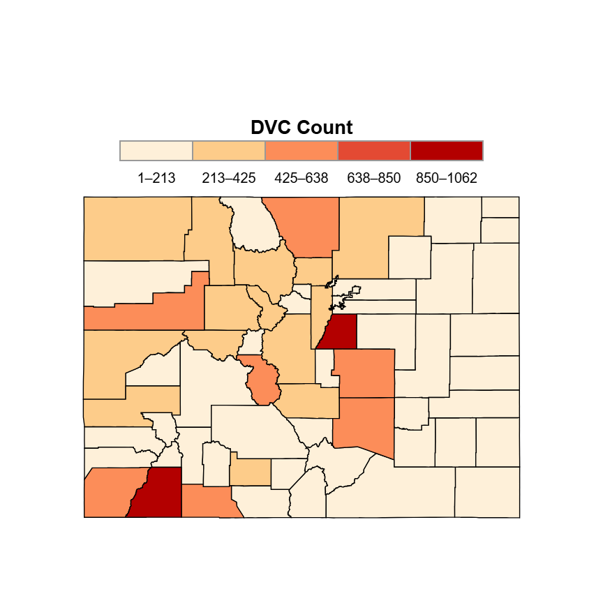
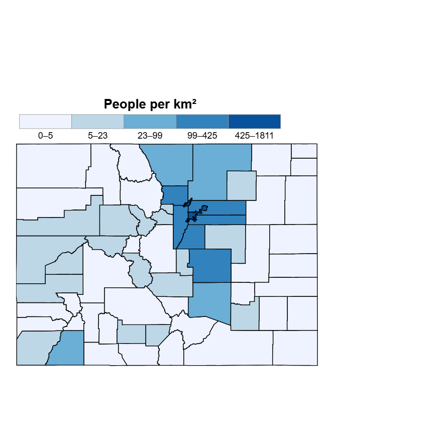
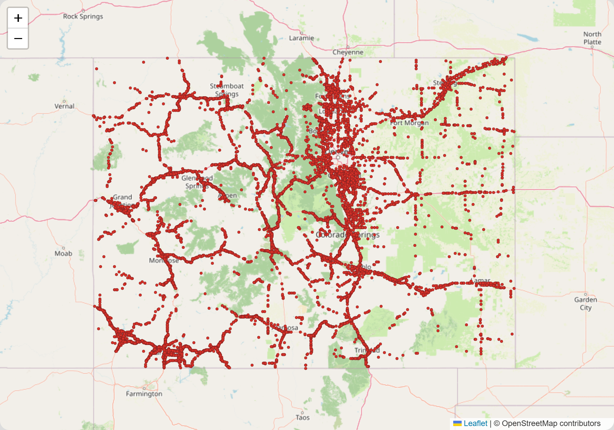
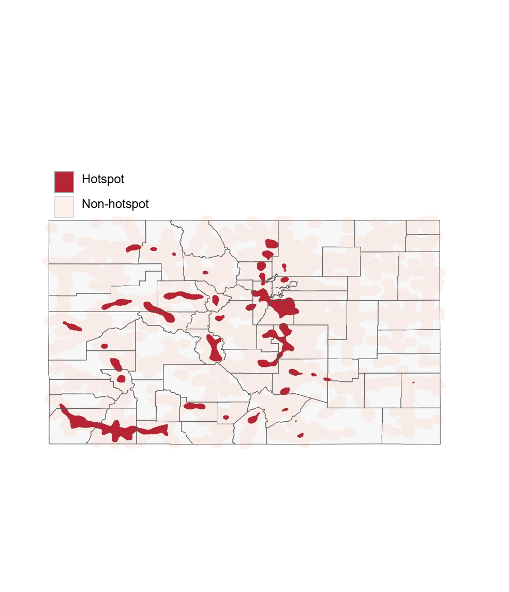
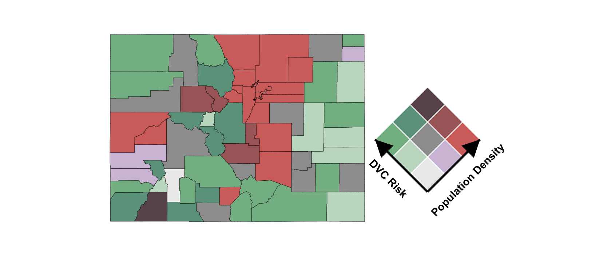
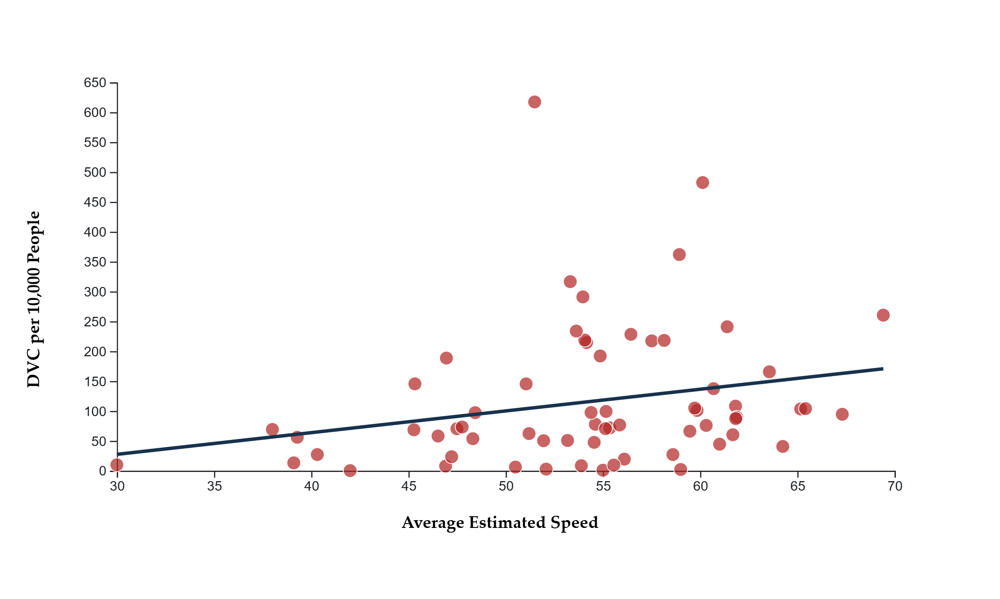
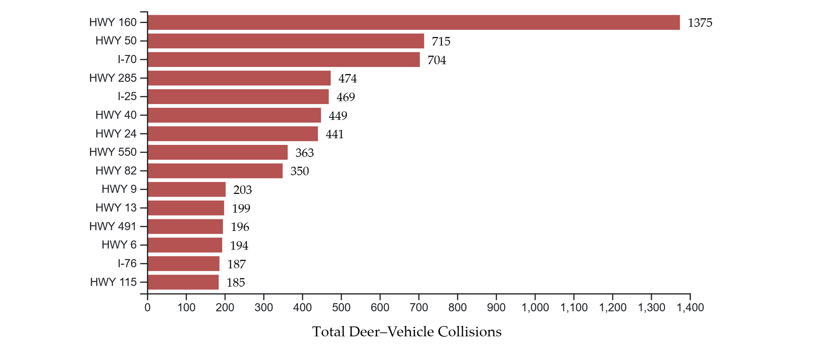

Project Story
The project asks where deer–vehicle collisions occur, whether collision risk is simply explained by population patterns, and how roadway corridors and vehicle speed shape collision burden. Rather than relying on one map, the project combines point-level mapping, hotspot surfaces, normalized rates, bivariate mapping, and linked visual analytics.
Core Spatial Visuals

Raw DVC Distribution Across Colorado
This choropleth map visualizes total deer–vehicle collisions across Colorado counties. The visualization highlights where collision counts are highest, while also showing why raw totals should be interpreted carefully before accounting for population and exposure.

Population Density Map
This choropleth map visualizes population density across Colorado counties. The visualization helps compare human concentration with deer–vehicle collision patterns and provides an exposure-related context for interpreting collision risk.

Interactive Dot Map
This interactive dot map visualizes individual deer–vehicle collision locations across Colorado. The visualization reveals strong roadway corridor patterns and spatial clustering that are often hidden in aggregated county-level maps, allowing users to explore fine-scale transportation and wildlife interaction patterns.

KDE Hotspot Map
This hotspot map identifies areas where deer–vehicle collisions are spatially concentrated across Colorado. The visualization highlights persistent high-intensity collision corridors and reveals regional clustering patterns that may reflect roadway structure, wildlife movement, and transportation activity.

Normalized DVC Risk Map
This choropleth map visualizes normalized deer–vehicle collision risk using DVCs per 10,000 people across Colorado counties. The visualization reveals counties that experience disproportionately high collision burden relative to population size, allowing more meaningful comparison than raw collision totals alone.

Bivariate Risk Map
This bivariate map examines the spatial relationship between population density and normalized deer–vehicle collision risk across Colorado counties. The visualization reveals areas where high population density and elevated collision burden overlap, while also identifying important spatial contrasts and regional outliers.
Analytical Visuals

Population Density vs DVC Risk
This scatterplot examines the relationship between population density and normalized deer–vehicle collision risk across Colorado counties. The visualization suggests that collision burden is not solely driven by population concentration, while also revealing substantial variability and several high-risk outlier counties.

Speed and Collision Burden
This scatterplot examines the relationship between average estimated roadway speed and normalized deer–vehicle collision risk across Colorado counties. The visualization suggests that counties with higher roadway speeds generally tend to experience greater collision burden per 10,000 people, while also revealing substantial variability and several high-risk outlier counties.

Top Collision Corridors
This bar chart ranks major roadway corridors by total deer–vehicle collisions across Colorado. The visualization highlights transportation corridors that experience disproportionately high collision burden and helps connect mapped spatial patterns with roadway infrastructure and traffic movement.
Advanced Interactive Component
Coordinated Linked View
This interactive panel links a county map and scatterplot so that users can connect geographic patterns with statistical relationships. It supports exploratory analysis by helping users identify spatial and statistical outliers.
Key Findings
- Collision points reveal strong corridor-based clustering that is hidden in county-level maps.
- Normalized DVC risk shows that some lower-population counties experience disproportionately high collision burden.
- The bivariate map shows that population density and collision risk do not always overlap spatially.
- Roadway corridor rankings help translate mapped patterns into transportation-relevant findings.